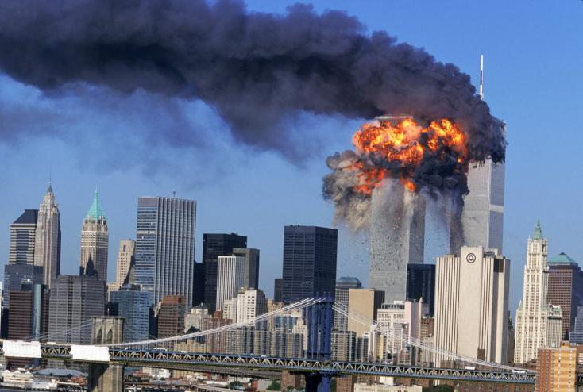

911:
A 2001. szeptember 11-i merénylet, közismertebb nevén 9/11. Talán a világ egyik legnagyobb terrortámadásának is nevezhető. Az al-Kaida szervezet 19 tagja eltérített négy utasszállító gépet. A gépeltérítők két gépet a New York-i World Trade Center (New York-i Kereskedelmi központ) ikertornyába vezettek. A két gép becsapódása között összesen 17 perc telt el, majd miután mind a két gép becsapódott, az épületek szinte egymás után összedőltek. Ezután a másik két gépből egy az Egyesült Államok Védelmi Minisztériumának épületébe csapódott 9 óra 37 perckor. A negyedik gép pedig 10 óra 3 perckor zuhant le egy mezőre Stonycreek Township település közelében, miután az utasok visszavették az irányítást a gépen. Egyes állítások szerint ezt a gépet a Fehér Háznak szerették volna vezetni. A tragikus támadásokban összesen 2977-en vesztették életüket.
2004. március 11:
Spanyolországi merénylet. Amelyeket spanyolul a dátum rövidítésével általában 11-M néven említenek. 2004. március 11-én Madridban négy vonat Atocha pályaudvarára tartott, mikor összesen 10 robbanás rázta meg a vonatokat. Két robbanásról a pályaudvari kamerák felvételt is készítettek. Később kiderült, hogy a tűzszerészek még 3 fel nem robbant bombát találtak. A robbanószerkezetek körülbelül reggel 7 óra 37-38 és 39 perckor robbantak fel. A támadásban 191-en vesztették életüket és körülbelül 2050-en megsérültek. Mint kiderült a bíróság a támadáshoz az al-Kaida szervezettel kapcsolatban álló marokkói Jamal Zougamot találta bűnösnek.

2004. szeptember 1:
Oroszországi terrortámadás. Beszláni vérengzés. 2004. szeptember 1-én az Oroszország Észak-Kaukázusi régió területén az Észak-Oszétiában fekvő Beszlán 1. számú iskolájában történt terrortámadás egy bizonyos Samil Baszajev megrendelésére. A csecsen és ingus katonákból álló csoport mind egy 34 fő elfoglalta a Beszlán 1-es iskolát Samil Baszajev parancsára. Mint egy 1100 főt ejtettek túszul. A kiváltó ok a 2. orosz csecsen háború volt. A túsztárgyalások 3 napig tartottak, ami után az orosz haderő megkezdte az épület támadását. A túszok között 777 gyermek is volt. A fegyveres támadások közben körülbelül 780-an sérültek meg és 334 túsz közülük 186 gyermek vesztette életét (+31 terrorista).


2013. szeptember 21:
Szeptember 21-én a Kenyai Nairobi-ban található bevásárlóközpont ellen indult terrortámadás. Az al-Kaida szervezet egyik mellékága, az Al-Shabaab szomáliai iszlamista szervezet volt a támadó. A terroristák túszokat ejtettek, a szervezet szóvivője pedig arról tájékoztatta a kenyai erőket egy honlapon, hogy a katonái bármikor megölhetik a túszokat. Amikor megtörtént a bejelentés, körülbelül 10-15 túszejtő 30 főt tarthatott fogva, ez később megnövekedett. 2013. szeptember 22-én a kenyai hadsereg helikoptert küldött a bevásárló központ tetejére, ahol a katonák leszállás után egyből megkezdték a behatolást. A mentőakció közben a hadsereg a legtöbb túszt kiszabadította. A halálos áldozatok száma 67 (61 civil és 6 személy a biztonsági erőktől). A szervezet nyilvánosságra hozta, hogy a támadásban részt vett: Ahmed Mohamed Isse, Abdifatah Osman Keenadiid, Gen Mustafe Noorudiin. A többi támadó Finnországból, Kanadából, Nagy-Britanniából, Szomáliából és Kenyából való volt.